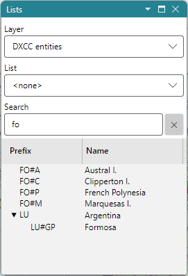

Prefix Search
The Search box of the Lists Panel finds DXCC entities, call areas and provinces. Pick the DXCC entities layer, and type any of these:
- a prefix, such as
UA0orKH6; - a full callsign, such as
VE3NEAorKH6/W1AW; - the name of an entity or a province, such as
Canada.
There is no callsign database: the location of a callsign comes from its prefix alone.

- the list shows the DXCC entities whose prefixes match the callsign, and under each one the call area and the province the callsign belongs to, expanded: VE3NEA lists Canada, with its call area VE3;
- entities and provinces whose names match the text are listed too, after the prefix matches.
Double-click a row to find the entity on the map, or Ctrl-click it to see its Item Details.
How the Text Is Read
The text is read as a callsign when it is one word of letters and digits, optionally with a /,
that holds a digit or a /, or is one or two letters: VE3NEA, KH6/W1AW, UA0K, F. Other
text, such as USA, is matched only against the names, so it finds the United States and not the
entities whose prefixes begin with those letters.
The callsign is matched against the prefix masks of every DXCC entity, call area and province,
and every record whose mask matches is listed, not only the most specific one. A portable prefix, such as KH6/ in KH6/W1AW, is
matched as a prefix of its own. A partial prefix that no mask matches whole, such as UT3 or JT,
lists the entities whose masks begin with it.
The DXCC Tree
On the DXCC layer the list is a tree: each DXCC entity, with its call areas under it, and the provinces or states under them. The prefix column shows each record's prefix, and the triangle before a prefix opens and closes the rows under it.
See also DXCC Entities and Prefixes.